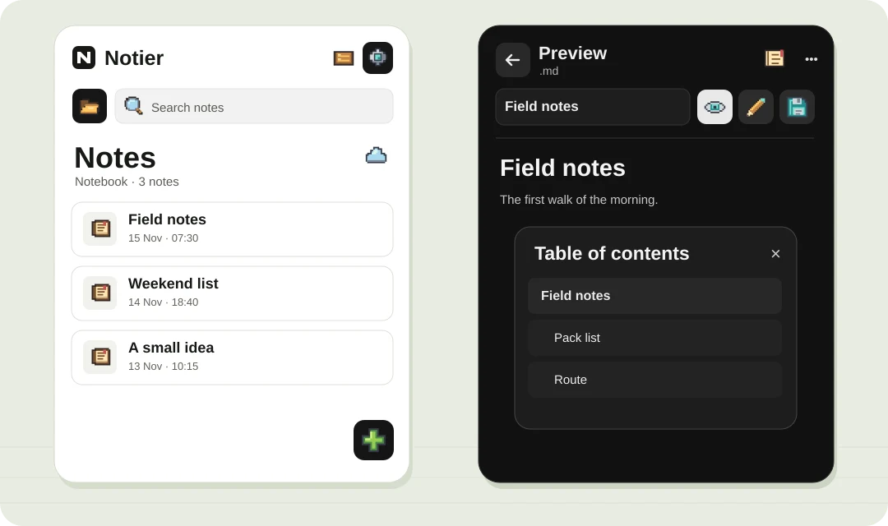

Android 8 ve üzeri
Notier
Markdown notları
Notier, Markdown notlarını açıp düzenleyebileceğin sade bir Android uygulaması. Dosyalarını cihazındaki bir klasörde tutabilir veya Google Drive’a bağlanabilirsin.

Klasörünü seç
Cihazındaki bir klasörü aç, .md ve .markdown dosyalarını ara ve sırala.
Yaz ve önizle
Markdown düzenleyicide yaz. Biçimlendirilmiş önizlemede tabloları, görev listelerini ve kod bloklarını oku.
Drive’a bağlan
Google hesabına izin verdiğinde Drive klasörlerini gezip Markdown notlarını açabilir ve kaydedebilirsin.
Drive verileri nasıl kullanılır?